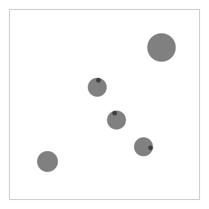
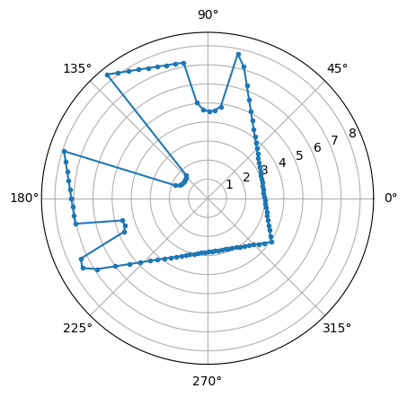
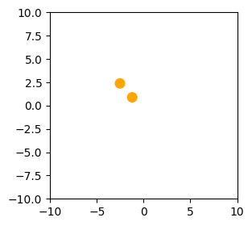

[1]:
from navground import core, sim
import numpy as np
[2]:
world = sim.World()
# place some agents at random position
for _ in range(3):
agent = sim.Agent(radius=0.5)
agent.position = np.random.rand(2) * 4 - 2
agent.orientation = np.random.rand() * np.pi * 2
world.add_agent(agent)
world.add_obstacle(core.Disc((3, 3), 0.75))
world.add_obstacle(core.Disc((-3, -3), 0.55))
ps = [(5 * i, 5 * j) for i, j in ((1, -1), (-1, -1), (-1, 1), (1, 1), (1, -1))]
for p1, p2 in zip(ps, ps[1:]):
world.add_wall(core.LineSegment(p1, p2))
world.space_agents_apart(minimal_distance = 1.0)
agent = world.agents[0]
agent.pose
[2]:
Pose2((2.052706, -2.224733), 6.128071)
[3]:
from IPython.display import SVG
from matplotlib import pyplot as plt
from navground.sim.ui import to_svg
SVG(to_svg.svg_for_world(world, width=300))
[3]:

Geometric#
[4]:
state = core.GeometricState()
[5]:
estimation = sim.state_estimations.BoundedStateEstimation(
range=10, update_static_obstacles=True)
[6]:
estimation.update(agent, world, state)
[7]:
state.neighbors
[7]:
[Neighbor(Disc((0.631025, -0.818000), 0.500000), (0.000000, 0.000000), 0),
Neighbor(Disc((-0.382108, 0.907496), 0.500000), (0.000000, 0.000000), 0)]
[8]:
state.static_obstacles
[8]:
[Disc((-3.000000, -3.000000), 0.550000), Disc((3.000000, 3.000000), 0.750000)]
[9]:
# not a bug ... does not dynamically update static obstacles
# but I should add a param to specify this
state.line_obstacles
[9]:
[]
Sensing#
Lidar#
[10]:
state = core.SensingState()
[11]:
estimation = sim.state_estimations.LidarStateEstimation(
range=10, resolution=100)
[12]:
estimation.update(agent, world, state)
[13]:
ranges = state.buffers['range'].data
angles = np.linspace(estimation.start_angle,
estimation.start_angle + estimation.field_of_view,
estimation.resolution)
[14]:
plt.polar(angles, ranges, '.-')
[14]:
[<matplotlib.lines.Line2D at 0x120249a00>]

Discs#
[15]:
state = core.SensingState()
[16]:
estimation = sim.state_estimations.DiscsStateEstimation(
range=10, number=2, max_radius=10)
[17]:
estimation.update(agent, world, state)
[18]:
dict(state.buffers)
[18]:
{'position': Buffer(description=BufferDescription(shape=(2, 2), type=dtype('float64'), low=-10.0, high=10.0, categorical=False), data=array([[-1.21646029, 0.87765594],
[-2.52532085, 2.375851 ]])),
'radius': Buffer(description=BufferDescription(shape=(2,), type=dtype('float64'), low=0.0, high=10.0, categorical=False), data=array([0.5, 0.5])),
'valid': Buffer(description=BufferDescription(shape=(2,), type=dtype('uint8'), low=0.0, high=1.0, categorical=False), data=array([1, 1], dtype=uint8))}
[19]:
fig, ax = plt.subplots(figsize=(3, 3))
# ax.add_patch(plt.Circle((0, 0), agent.radius, color='black'))
for xy, r in zip(state.buffers['position'].data,
state.buffers['radius'].data):
ax.add_patch(plt.Circle(xy, r, color='orange'))
plt.xlim(-estimation.range, estimation.range)
plt.ylim(-estimation.range, estimation.range)
# plt.axis('off');
[19]:
(-10.0, 10.0)
